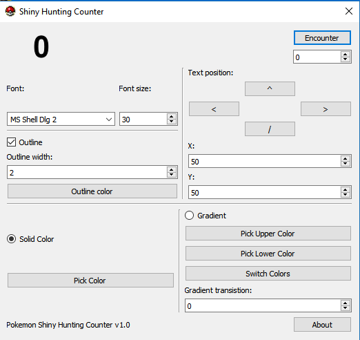

Pokemon Shiny Hunting Counter
Pokemon Shiny Hunting Counter is a program for keeping track of Pokemon encounters while hunting for shiny Pokemon.
It offers a wide variety of text-customization for Youtubers and live streamers.
Usage
To increment the counter, click the encounter button, and when it is highlighted in blue, you can use the space bar to increment the count instead.
Todo
- Save settings
- Render counter to second window
- Add commas to counter
- Show current color
- Pattern option(alternative to solid and gradient)
Download Latest Version (1.0)
Download executableDownload source code (Zip)
You can also download the latest source code, and compile it yourself, for new features not yet present in the latest release.
Download source code (Zip)Github Page
Download older versions
| Version | Binary | Source |
|---|